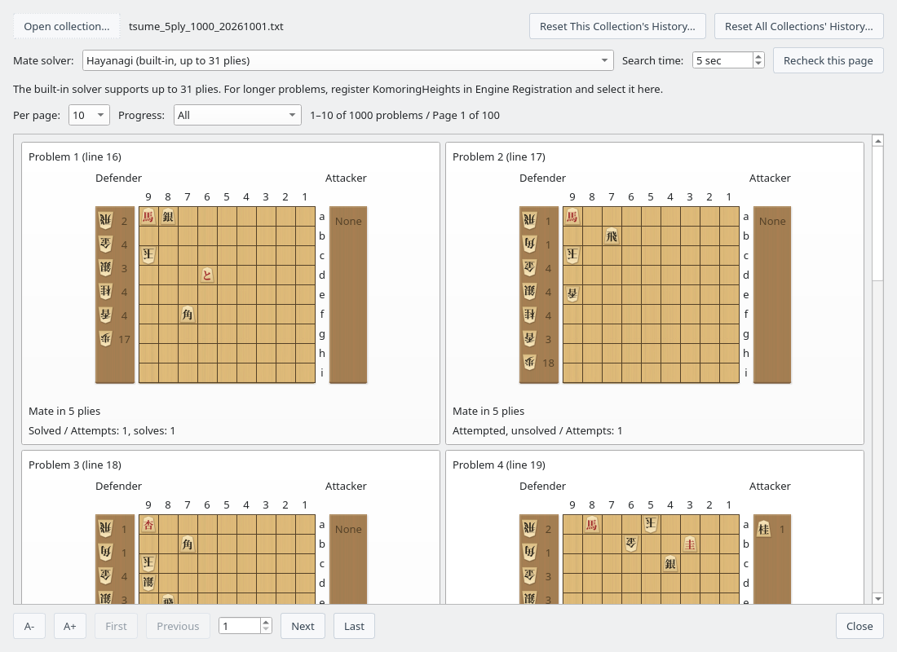
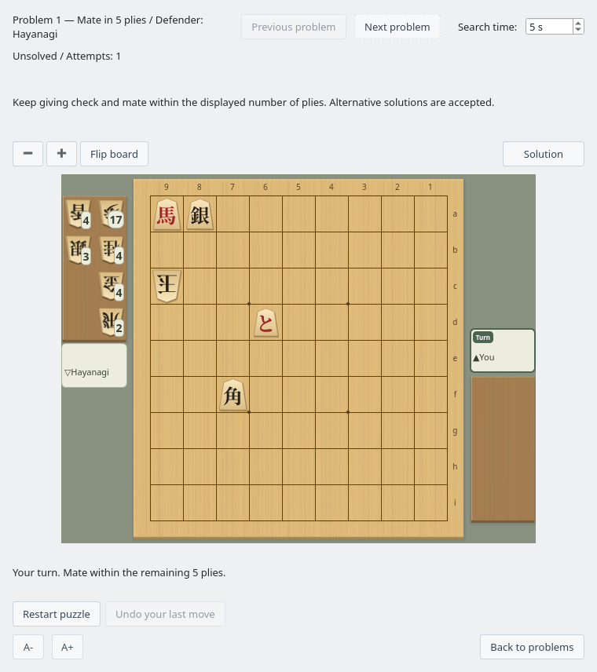
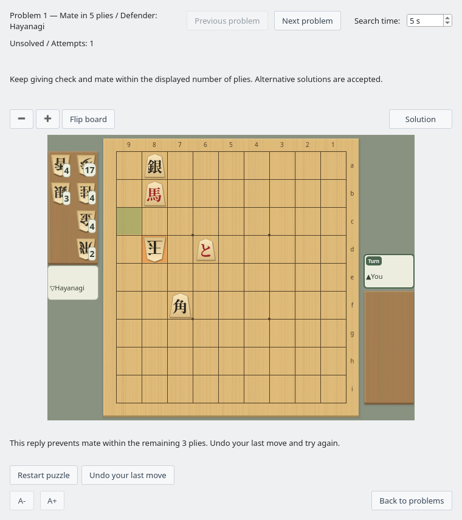
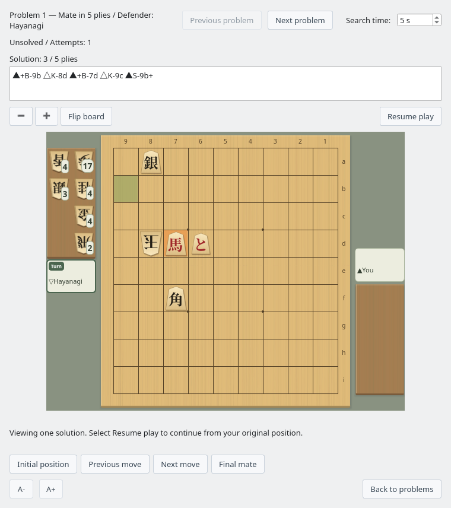

Tsume Shogi Play
Choose a puzzle, solve it on the board, and review the solution
Screenshots were captured on Linux with the English interface.
Choose a Puzzle by Its Starting Position
Browse large collections a page at a time
Open a collection
Choose Game → Tsume Shogi Play… to open Tsume Shogi Problems. Click Open collection… and select a text file containing one SFEN position per line.
You can use collections saved by the Tsume Shogi Generator. Files containing only starting positions and files with reference lines are both supported. The mate length comes from verified analysis results, rather than solely from the filename or the reference line's length. Each player's move counts as one ply.
Faster loading, batched progress retrieval, and analysis cache reuse apply to all supported collections. The published collections of 1,000 puzzles each, covering mates in 3 to 13 plies, also skip the initial mate-length search when their contents match the verified records bundled with the app. Renaming or moving a file preserves this benefit; editing its contents restores normal analysis. Recheck this page always runs a fresh search.
Download the collections
Collections of mates in 3, 5, 7, 9, 11 and 13 plies (1,000 puzzles each, 6,000 in total) are published. The Linux ZIP (ShogiBoardQ-linux.zip) includes them in its data/tsumeshogi folder. On other systems, right-click a link below and save the file.
| Mate length | Puzzles | File |
|---|---|---|
| 3 plies | 1,000 | tsume_3ply_1000_20261001.txt (65 KB) |
| 5 plies | 1,000 | tsume_5ply_1000_20261001.txt (75 KB) |
| 7 plies | 1,000 | tsume_7ply_1000_20261001.txt (86 KB) |
| 9 plies | 1,000 | tsume_9ply_1000_20261001.txt (97 KB) |
| 11 plies | 1,000 | tsume_11ply_1000_20261001.txt (108 KB) |
| 13 plies | 1,000 | tsume_13ply_1000_20261001.txt (120 KB) |
All six are the October 1, 2026 edition (puzzles replaced after an added check for surplus pieces in hand) and are UTF-8 text files. For how they were made and verified, see the collection README (Japanese).
Review the position, mate length, and progress
Each card shows the starting board and pieces in hand, problem number, mate length, and your progress. Choose 10, 20, 50, or 100 problems per page. Use Previous, Next, or the page number to browse even a collection of 1,000 puzzles in manageable groups.
Filter by All, Not attempted, Attempted, unsolved, or Solved to find a puzzle to practice. Click its card to enter the play window.

Problem list: choose a puzzle by its starting position and mate length (mate-in-5 collection)
Select a mate solver and search time
The built-in Hayanagi works without registering an additional engine. It checks starting positions for mates up to 31 plies. For longer puzzles, obtain KomoringHeights, a tsume shogi engine developed and published by komori-n. Register it under Settings → Engine Settings…, then choose it under Mate solver in the problem list. See Registering an Engine for the setup steps.
Hayanagi still plays the defending moves when KomoringHeights is selected; KomoringHeights determines whether mate is possible. Long puzzles, including mates in 101 plies, can be used if the engine can finish its search within the time limit.
Search time can be set from 1 to 600 seconds. If a result is Undetermined, for example after a timeout, increase the time and click Recheck this page. Problems verified to have no mate cannot be opened for play.
Solve on the Board Against Hayanagi
Keep giving check and mate within the displayed number of plies
Move the attacking pieces
You play the attacker. Click a piece and its destination, or drag the piece to move it. You can also drop pieces from hand and choose whether to promote. After a correct checking move, the defender replies and it becomes your turn again.
Moves are judged by whether they lead to mate within the remaining number of plies, rather than just matching a reference line. Valid alternative solutions are accepted.

You attack and Hayanagi defends; watch the remaining number of plies as you play
Inspect the defensive reply and try again
If your checking move loses the required mate, Hayanagi plays a defensive reply on the board. The result appears about one second later so you can see the move first. The message distinguishes between no forced mate and no mate within the remaining number of plies.
Use Undo your last move to return to the position before your move and try another. Illegal moves and moves that do not give check are rejected. A search timeout does not count as an incorrect move; use Retry search to check again.

Review the defense and result, then undo your move to try again
| Control | Action |
|---|---|
| Restart puzzle | Return to the starting position and begin a new attempt. |
| Undo your last move | Return to the position before your most recent move. |
| Stop search / Retry search | Stop search appears during a search; Retry search appears when you can retry. You can increase the search time before retrying. |
| Previous problem / Next problem | Move to the neighboring problem in the filtered list order without returning to the list. The search time you set in the play window carries over. |
| Back to problems | Return to the same page and filters in the problem list. |
Replay a Solution One Move at a Time
Review a solution, then return to your game
Click Solution to replace the instructions above the board with the solution's moves and the playback move count. Restart puzzle and Undo your last move switch to playback controls below the board. Resume play appears in the same place as Solution and returns you to your game. The board and shared controls stay in place when switching modes. You can review one verified solution from the starting position. Long move lists can be scrolled and copied.

Compare the notation and board while stepping through each attacking and defending move
| Playback control | Action |
|---|---|
| Initial position | Show the solution's starting position. |
| Previous move / Next move | Step backward or forward by one ply, including the defender's moves. |
| Final mate | Show the final position in the solution. |
| Resume play | Hide the solution and playback controls, and continue from your position before playback. |
The board is read-only during playback. Viewing a solution does not increase your attempt or solve counts. If finding a solution takes time, use Stop search or Resume play to cancel.
Track Your Progress and Practice Again
Find both new puzzles and ones you have solved before
- Attempt and solve counts, and the dates of your last attempt and solve, are saved across application restarts.
- Browsing the list or waiting for automatic checks does not count as an attempt. An attempt is recorded when the play window is ready for you to move.
- A previously solved puzzle remains marked as solved even if you fail or abandon a later attempt.
- The same position retains its history when you rename or move the collection file.
- Use “Reset This Collection's History…” at the top of the list to mark every puzzle in the open collection as unattempted, regardless of the current page or filter. Identical positions in other collections share this history and are also reset.
- Use “Reset All Collections' History…” to reset the history of every collection you have opened. Both actions ask for confirmation and clear attempt and solve counts and dates. Resetting cannot be undone.
Progress is stored in a database separate from ShogiBoardQ's settings file. Distributed builds do not require a separate SQLite installation to save progress.
Adjust the Size and Board Orientation
Resize text and the board independently
| Control | Action |
|---|---|
| A− / A+ | Decrease or increase text size. The problem list and play window each remember their own setting. |
| − / + above the board | Zoom out or zoom in on the board in the play window. |
| Ctrl + mouse wheel | Resize the board by scrolling while the pointer is over it. |
| Flip board | Rotate the board by 180 degrees. Playing and solution playback work in either orientation. |
The board size and orientation are remembered for your next session.
To create your own puzzles, see Tsume Shogi Generator. To find mate from a regular game position, see Mate Search.